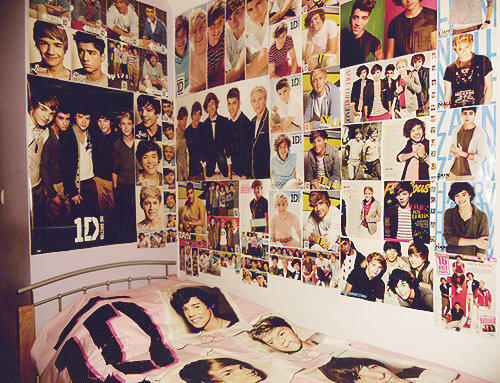
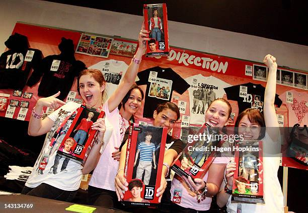
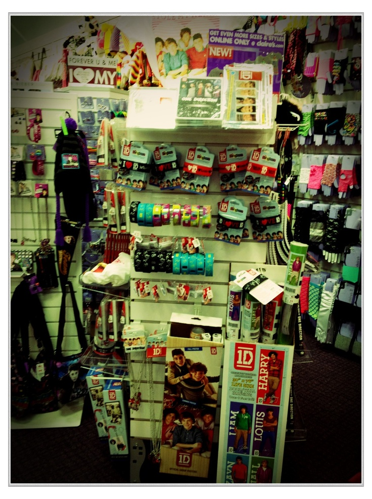
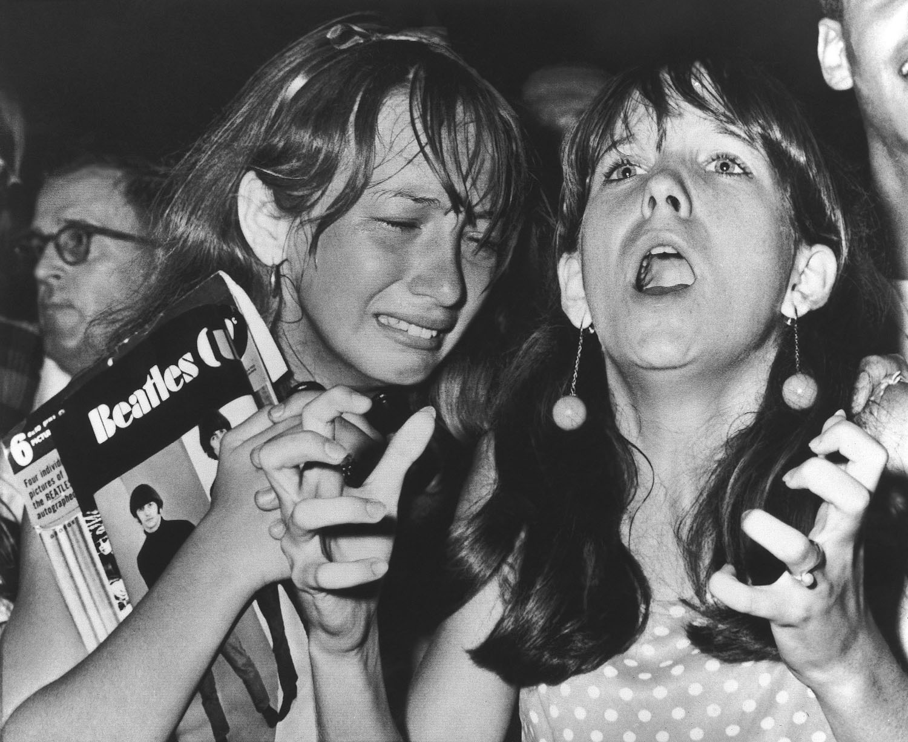
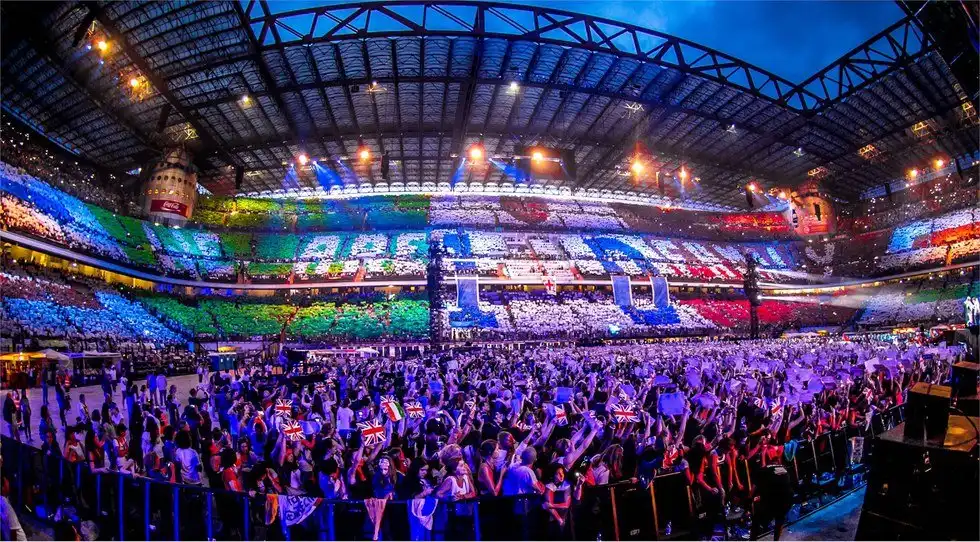
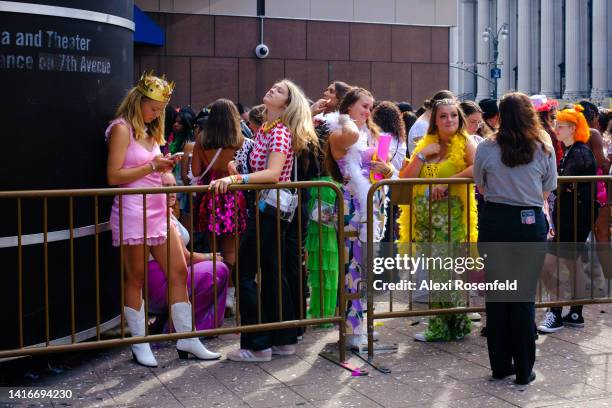

Fangirls are often dismissed as too emotional and hysterical. When in reality, fangirls are passionate about the things they love, creative, and crave community. They find joy in sharing similar interests with people. Lisztomania of the 1840s was named after the girls who were fans of Franz Liszt, being literally seen as ill and as having a medical condition. In contrast, Beatlemania and other later fandoms were seen as complete social movements. If you think of a fangirl's room, you will probably think of poster-covered walls. Constantly repping their favorite artists, all kinds of merchandise. I remember my older sister having One Direction posters from floor to ceiling in her room, phone cases, and of course, running a fan account.



With the rise of the internet and social media, modern-day fangirls have even more opportunities to connect with other fans around the world. Fangirls use social media platforms such as TikTok, Twitter, and Instagram to post videos and pictures relating to their favorite artist. Some fans make fan art, edits, and use hashtags to connect with others. These fans help promote their favorite creators or artists. I remember watching the Sturniolo Triplets on YouTube in high school, who blew up on TikTok, making videos talking in their car. They would often talk about how thankful they were to the fans who reposted clips from their videos, and that they really helped them be successful on YouTube. Fans of their content would create TikTok compilations from their YouTube or TikTok videos. Some of those videos did well, sending viewers of the compilation to their YouTube channel.


Fangirls wear outfits reflecting the artists they are seeing in concert. At the 2021 Grammys, Harry Styles wore a boa, one on the carpet, then one on stage when performing. Later that year, during Love on Tour 2021, boa feathers filled every area he played. The tour was originally scheduled for 2020 and was rescheduled to 2021 due to the pandemic. I remember getting tickets in 2019 when they went on sale. During quarantine, everybody was stuck inside and went online to escape. Between the tickets going on sale before the album even came out and the rescheduled tour, Harry had gained a great amount of fame. People were discovering his solo career during quarantine, watching music videos and interviews. During this time, before the tour started, people started curating concert outfit ideas more elaborate than they were before. Later in 2023, Taylor Swift started her tour, The Eras Tour, playing songs from all of her eras. Fans started making friendship bracelets and trading them at the shows. The bracelet idea came from one of Taylor's songs, “You’re On Your Own, Kid, lyrics, “so make the friendship bracelets, take the moment and taste it”. These tours helped create communities where fans could dress up and feel safe.
